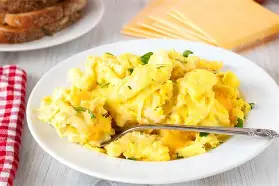

With-Heat Eggs
With-Heat Eggs have eggs such as...
- Scrambled eggs
- over easied eggs
- and omlants!
Eggs that do require heat are great for breakfast, lunch, or dinner! Though personnally
I dont eat eggs for dinner that often.

Go on and try the links at the top of the page to see different options!
You can try cooked food with eggs such as easy over or scrambled.
You can also try Not-cooked eggs, such as deviled eggs or egg salads.